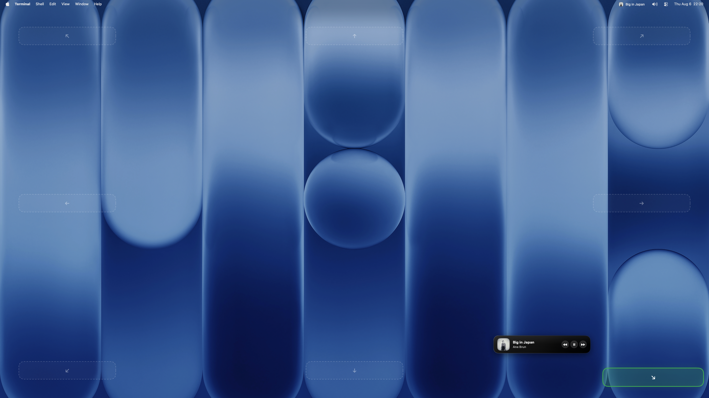
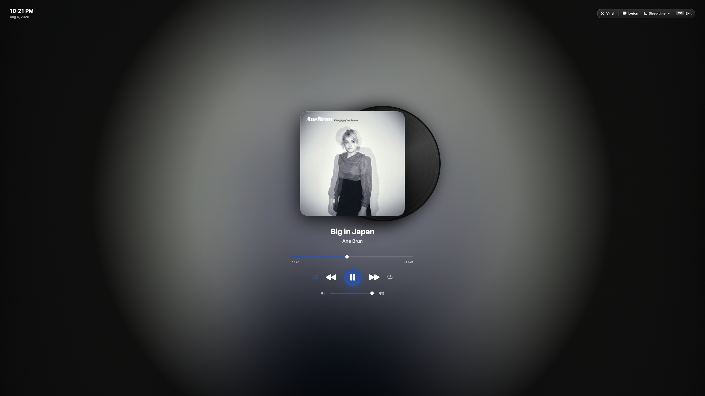
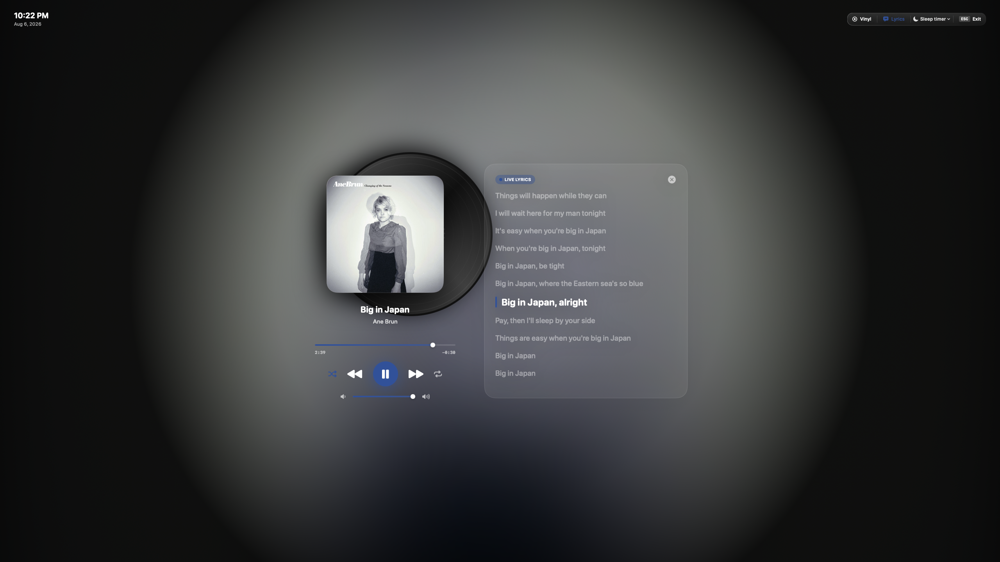

Yalnızca müzik çalarken görünür
Oynatıcılar boştayken menü çubuğu tertemiz kalır. Parça başladığında Songleton yerini alır, bittiğinde sadece kaybolur.
Şarkın nerede çalarsa çalsın, Songleton onu menü çubuğuna taşır. İstersen ekran kenarlarını da hızlı kontrole çevirir.
brew tap burak-bilgen/tap
brew install --cask songleton
Desteklenen oynatıcılar
8 uygulama, tek menü çubuğu.
Neden Songleton?
Oynatıcılar boştayken menü çubuğu tertemiz kalır. Parça başladığında Songleton yerini alır, bittiğinde sadece kaybolur.
Hesap ve ayrı bir kütüphane kurmaz. Spotify, Apple Music, TIDAL ve diğerlerini kullandığın haliyle, kendisi görünmeden yönetir.
Hesap, analiz ve izleme yok. Tüm kontrol Mac'inde kalır; internet yalnızca söz aranırken devreye girer.
Ürün turu
Her özelliği bir örnekle gösteriyoruz.
İmleci kenarda kısa süre tut; ekran kenarları kontrole dönüşür.
İmleci sol kenarda kısa süre tut. Halka dolmadan ayrılırsan işlem iptal olur.
Aynı hareketi sağda yap. Parça değişimi menü çubuğuna ve bildirime yansır.
İmleci üst kenarda beklet. Halka tamamlandığında oynatma durumu değişir.
Üst kenara tekrar gel. Müzik kaldığı yerden devam eder.
İki fare tuşunu basılı tutup yukarı veya aşağı sürükle.
Command ve Option'ı basılı tutup yukarı veya aşağı sürükle.
Çalan şarkı hak ettiğinde, ekranın tamamı onun.
Menü çubuğundaki parça adına sağ tıkla. Çalan şarkı tam ekran görünümüne geçer.
Vinyl, Cassette ve Glass temaları arasında geç. Senkron sözler ve kısayollar aynı görünümde kalır.
Odağın bozulmaz; tüm tercihlerin tek yerde.
Bildirim seçtiğin konumdan gelir ve aktif uygulamanı öne geçirmez.
Hareketler, bildirim konumu, söz zamanlaması, menü çubuğu ve dil ayarları burada.
Diğer ayrıntılar
Masaüstünde sabit duran mini oynatıcı. Farenle istediğin yere sürükle, 8 noktadan birine mıknatıs gibi yapışsın. Parça değişince yerinde yumuşakça yenilenir, kayan yazı ve üç oynatma düğmesiyle müzik hep elinin altında.
İmlecin bulunduğu ekranda seçtiğin konumdan gelir. Klavye odağını almaz.
Vinyl, Cassette ve Glass. Her biri gerçek oynatma durumunu gösterir.
LRC zamanlaması, düz metin desteği ve ayarlanabilir gecikme.
Ambient açıkken oynatma, parça, ses, söz ve tema kontrolleri klavyede de var.
Hesap, reklam ve analiz yok. Kontrol Mac'inde kalır. Söz araması yalnızca eşleşme için gereken parça bilgisini kullanır.
Koda bak ↗Ekran Görüntüleri
Gerçek ekran görüntülerimizle Songleton'ın masaüstünüzde nasıl göründüğünü inceleyin.

Menü çubuğundaki canlı oynatma durumu, genişletilmiş üzerine gelme paneli ve masaüstündeki Mini Oynatıcı tek ekranda uyum içinde çalışır.

Mini Oynatıcı'yı masaüstünde istediğin yere sürükle. Yarı saydam 8 yapışma bölgesi sürüklerken parlar, kartı tam hizasına oturtur.

Çalan albümün renklerinden beslenen aura ışıması, plak ve kaset temaları ile müziğinize odaklanacağınız sakinleştirici tam ekran deneyimi.

Ambient Mode içerisinden anında erişilebilen senkronize şarkı sözleri. Şarkı ilerledikçe kelimeler ve satırlar otomatik akar.
FAQ
Spotify, Apple Music, TIDAL, Deezer, Amazon Music, YouTube Music, SoundCloud ve Qobuz masaüstü uygulamaları. Songleton ikinci bir müzik arşivi oluşturmaz.
macOS, müzik uygulamalarına gönderilen komutları Otomasyon izniyle korur. Songleton'ın çalan parçayı görmesi ve oynatma kontrollerini kullanması için bu izin gerekir. Erişilebilirlik izni yalnızca ekran kenarı hareketleri içindir.
Hayır. Songleton'da hesap, analiz yazılımı veya dinleme geçmişi yüklemesi yok.
Evet. Proje MIT lisanslı Swift ve SwiftUI kodundan oluşuyor. Xcode yüklü bir Mac'te depoyu klonlayıp make çalıştırabilirsin.
Songleton for macOS
macOS 14 ve sonrası için ücretsiz, yerel ve açık kaynak.